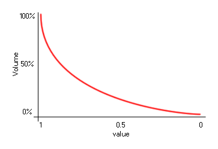

sound_fade
Fade a sound in or out over a given time.
Syntax :
sound_fade(index, value, time);
| Argument | Description |
|---|---|
| index | The index of the sound to fade. |
| value | The final volume from 0 to 1. |
| time | The length of the fade in milliseconds. |
Returns : N/A
Description
With this function you can fade a sound in or out over a given length of time. The time is measured in milliseconds, and the function requires that you input a final volume for the sound to have reached by the
end of that time. This volume can be between 0 (silent) and 1 (full volume) and the volume scale is logarithmic in nature, so a volume of 0.5 is not half volume, as illustrated by the image below:

This function will affect all instances of the sound that are playing currently in the room and the final volume will be the volume at which all further instances of the sound will be played.
Example :
if val == 0
{
sound_volume(snd_Music, 0);
sound_play(snd_music);
sound_fade(snd_Music, 1, 5000);
}
The above code checks a variable and if it returns true, the code will set the volume for the sound indexed as "snd_Music" to 0, then start it playing, and then set the volume to fade up to full volume (1) over 5 seconds (5000 milliseconds).